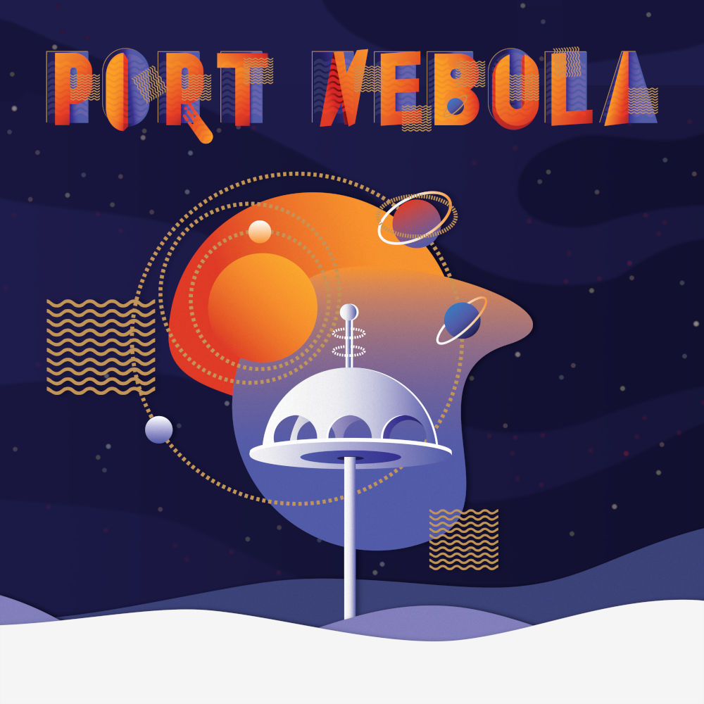
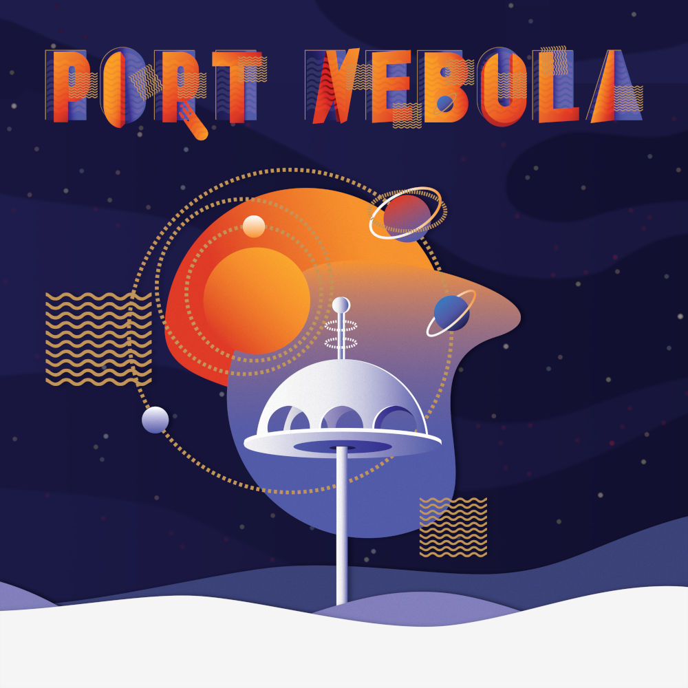

Welcome to Port Nebula!
What a turbulent exploration it has been, thought Tynnu, as the bow of his vessel passed the generous circular gates surrounding Port Nebula's landing pad.
Tynnu stared into the sprawling nebulosity all around the habitation deck, which had fueled his curiosity since he was a boy.
Taking pictures of space...
...requires patience, attention to details and good cold resistance. Each one of the following images has taken minutes of planning, hours of data gathering and days of editing.
Most budding Astrophotographers start with an old DSLR camera and lens on a tripod, perhaps even with a small equatorial mount in between.